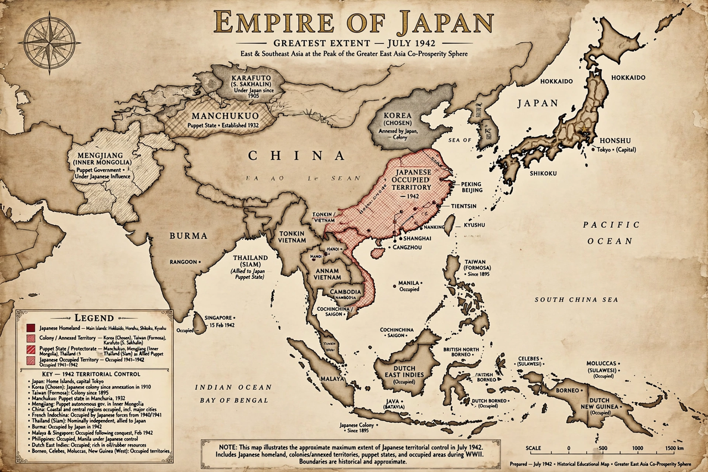

| Existed | 1868–1947 |
|---|---|
| Capital | Tokyo |
| Emperors | Meiji (1868–1912); Taishō (1912–1926); Shōwa / Hirohito (1926–1989) |
| Government | Constitutional monarchy; military-dominated from the 1930s |
| Territory at peak (1942) | c. 7.4 million km² including occupations |
| Ended | Post-war constitution of 1947 |
The Empire of Japan was the Japanese nation-state that existed from the Meiji Restoration in 1868 until the enactment of the post–Second World War constitution in 1947. Emerging from more than two centuries of Tokugawa isolation after Commodore Matthew Perry's opening of Japan in 1853–54, the empire rapidly industrialised during the Meiji period, defeated China (1894–95) and Russia (1904–05), annexed Korea (1910), and by 1942 ruled the largest empire in Japanese history, spanning much of East and Southeast Asia and the Pacific.
The Meiji Restoration abolished the shogunate and restored imperial rule. The new government centralised the state, abolished the feudal domains and samurai privileges, built conscript armed forces, railways and industries, and promulgated the Meiji Constitution in 1889. Victory in the First Sino-Japanese War brought Taiwan and influence in Korea; victory over Russia in 1905 stunned the world and established Japan as a great power.
Japan joined the Allies in the First World War and gained German Pacific territories. After the Manchurian Incident of 1931 the Kwantung Army seized Manchuria and created the puppet state of Manchukuo; full-scale war with China followed from 1937, marked by atrocities such as the Nanjing Massacre. The Imperial Army and Navy increasingly dominated politics, and assassinations and coups weakened civilian government during the 1930s.
As a member of the Axis, Japan attacked the United States at Pearl Harbor on 7 December 1941 and rapidly conquered Malaya, the Philippines, the Dutch East Indies and Burma. Defeat at Midway (June 1942) began a long reversal through the island-hopping campaigns to Iwo Jima and Okinawa. Following the atomic bombings and Soviet declaration of war, Emperor Hirohito announced Japan's surrender on 15 August 1945; the formal instrument was signed aboard USS Missouri on 2 September 1945. Leading figures were tried by the International Military Tribunal for the Far East. Under Allied occupation, the 1947 constitution redefined Japan as a democratic state with the emperor as a symbol, ending the empire.
This article is a recreation from memory for the muse-webcrawl project.